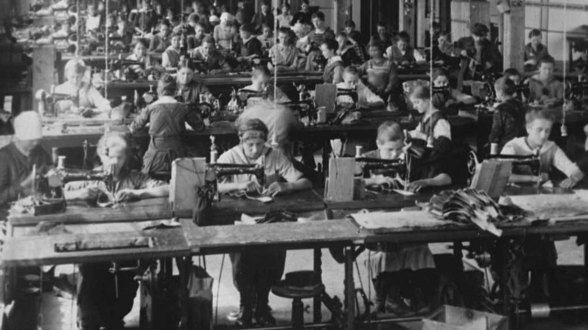
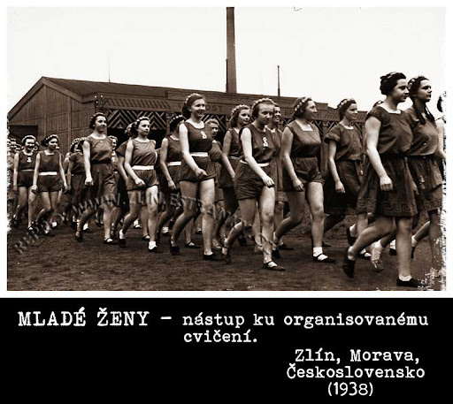
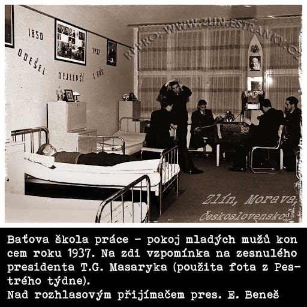
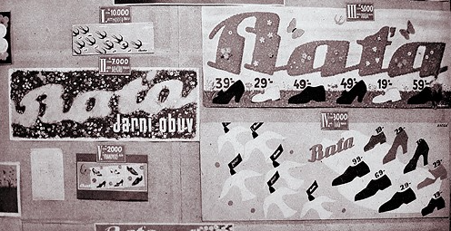

Tomáše Bati.
1

Baťova škola práce byla založena v roce 1925 ve Zlíně jako výsledek jedinečné vize Tomáše Bati – nejen podnikatele, ale také myslitele a reformátora. Jeho cílem nebylo vytvořit další průmyslovou školu, ale vychovat novou generaci lidí, kteří by spojovali technické znalosti, praktické schopnosti a morální pevnost.  Tomáš Baťa věřil, že škola musí vychovávat „člověka celého“ – odborníka i občana, praktika i myslitele, jednotlivce schopného samostatně přemýšlet, rozhodovat se a nést odpovědnost. Inspiroval se americkým pragmatismem i vlastními zkušenostmi z podnikání. Viděl, jaký rozdíl činí v úspěchu firmy osobní přístup jednotlivce, jeho spolehlivost, tvořivost i schopnost týmové práce. Zároveň si uvědomoval, že tradiční školství v té době často připravovalo lidi teoreticky, ale ne pro reálný život. Proto spojil vzdělání s praxí. Chtěl, aby škola nestála mimo skutečný svět, ale byla jeho součástí – aby studenti mohli hned aplikovat, co se naučí, a pochopit smysl své práce v širším kontextu. Založením školy Baťa nevytvořil jen výukovou instituci, ale začal budovat novou kulturu – kulturu výchovy k podnikavosti, odpovědnosti a občanské statečnosti. Jeho vize sahala daleko za brány Zlína: chtěl měnit svět skrze změnu jednotlivce.
2
Baťova škola práce byla výjimečná tím, jak prakticky propojovala výuku s provozem firmy. Studenti se vzdělávali v klasických i odborných předmětech a zároveň pracovali v různých úsecích Baťova podniku – v dílnách, kancelářích, konstrukcích, skladech nebo obchodech. To jim umožňovalo získat nejen znalosti, ale i pracovní návyky, technickou zručnost, ekonomické myšlení a zkušenosti s reálnou odpovědností.  Den začínal brzy ráno. Po rozcvičce a hygieně následovala dopolední výuka, vedená odborníky z praxe i pedagogy. Vedle matematiky, češtiny, cizích jazyků nebo historie se vyučovala i ekonomika, strojírenství, účetnictví nebo obchodní korespondence. Výuka byla interaktivní, zaměřená na řešení konkrétních problémů. Po obědě studenti nastupovali do odpolední pracovní směny v podniku, kde se učili od zkušenějších kolegů a přispívali k chodu firmy. Večer byl věnován samostudiu, osobnímu rozvoji, sportu nebo kultuře. Studenti psali deníky, účastnili se diskusních kroužků a hodnotících rozhovorů. Každý měl svého mentora, který sledoval jeho pokrok nejen ve škole, ale i v osobním rozvoji. Celý systém byl veden k tomu, aby student pochopil smysl své činnosti, naučil se hospodařit s časem, překonávat překážky a být prospěšný sobě i ostatním. Škola měla formovat aktivní lidi, kteří se v životě neztratí.
3
Součástí školy byly moderně vybavené internáty, které byly považovány za druhý domov studentů. V nich se důsledně dbalo na pořádek, denní režim, kulturu chování a samostatnost. Studenti zde bydleli ve vícelůžkových pokojích, sdíleli společné prostory a měli své osobní i skupinové povinnosti.  Každý den byl přesně naplánovaný – od budíčku, přes školu a práci, až po večerní program. Nešlo ale o slepou disciplínu. Cílem bylo naučit mladé lidi vést si život efektivně, zodpovědně a smysluplně. Studenti si uklízeli pokoje, připravovali si oblečení, starali se o pořádek na chodbách. Pravidelně se konaly hodnotící porady, kde se vyzdvihovaly dobré příklady a upozorňovalo na chyby. V internátech se také rozvíjel kolektivní duch – organizovaly se sportovní turnaje, filmové večery, přednášky a besedy. Podpora fyzické kondice byla důležitou součástí života – běžné byly pravidelné cvičení, fotbal, běh, plavání či turistika. Vychovatelé plnili roli pedagogů, mentorů i vzorů. Sledují nejen kázeň, ale i psychickou pohodu studentů, jejich morální postoje a mezilidské vztahy. Vztah mezi studenty a vychovateli byl založen na respektu, důvěře a otevřené komunikaci. Internáty tak nebyly jen místem bydlení – byly výchovným prostředím, kde se mladí lidé učili žít, spolupracovat, plánovat si čas a být sami sebou.
4
Baťova škola práce se stala vzorem a inspirací nejen v rámci tehdejšího Československa, ale i za jeho hranicemi. Díky inovativnímu přístupu, propojení teorie s praxí a důrazu na morální výchovu vzbudila velký mezinárodní ohlas. Do Zlína přijížděli odborníci z mnoha zemí – pedagogové, politici, podnikatelé i novináři – aby studovali její systém a přenesli jej domů.  Baťa rozšiřoval své podniky do zahraničí (např. do Indie, Jugoslávie, Velké Británie, Nizozemska nebo Kanady) a spolu s tím se šířila i filozofie školy. V nových závodech vznikaly obdobné výchovně-vzdělávací programy, které se snažily aplikovat principy zlínské školy do místních podmínek. Základní myšlenky školy – důraz na sebedisciplínu, propojení výuky s praxí, rozvoj charakteru, etické vedení, podnikavost a víra v jednotlivce – se promítly i do moderních vzdělávacích konceptů po druhé světové válce. V mnoha ohledech předběhla svou dobu – dodnes se o ní mluví jako o předchůdci duálního vzdělávání nebo konceptu „škola života“. Odkaz Baťovy školy práce žije dál – nejen v paměti absolventů a historiků, ale i v hodnotách, které společnost stále hledá: v poctivé práci, výchově k odpovědnosti a víře, že vzdělání má formovat člověka, nejen jeho znalosti.